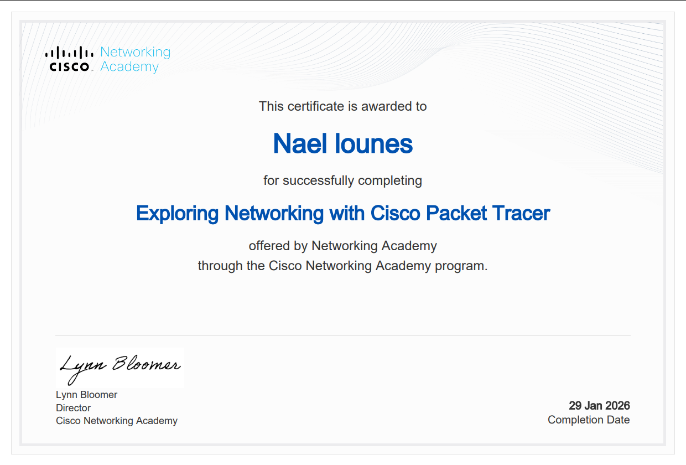
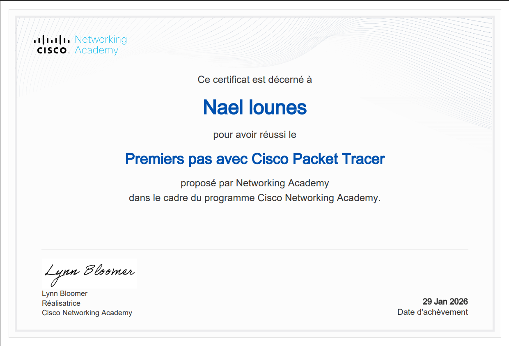
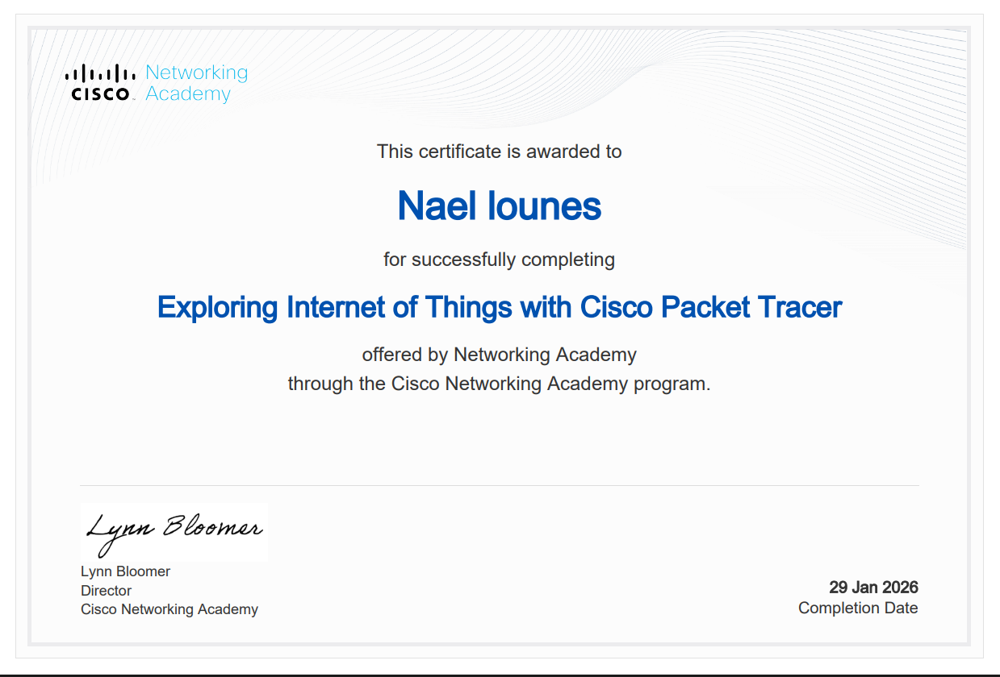

Etudiant en BTS SIO (SISR)
Lycée Turgot, Paris 3e
Lycée Jules Siegfried, Paris 10e
CASPE du 19e arrondissement
Expérience professionnelle
Expérience professionnelle

Cisco Networking Academy[cite: 1]
29 Jan 2026[cite: 1]
Cisco Networking Academy[cite: 2]
29 Jan 2026[cite: 2]
Cisco Networking Academy[cite: 3]
29 Jan 2026[cite: 3]A Venir